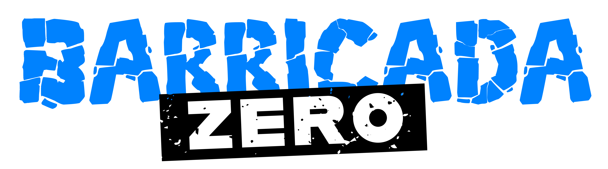

Forças de Segurança Empregadas na Operação
Órgãos Parceiros da Operação
Painel de Dashboards - Clique nos botões para acessar
© GSI - 2025 - Operação Barricada Zero - Governo do Estado do Rio de Janeiro